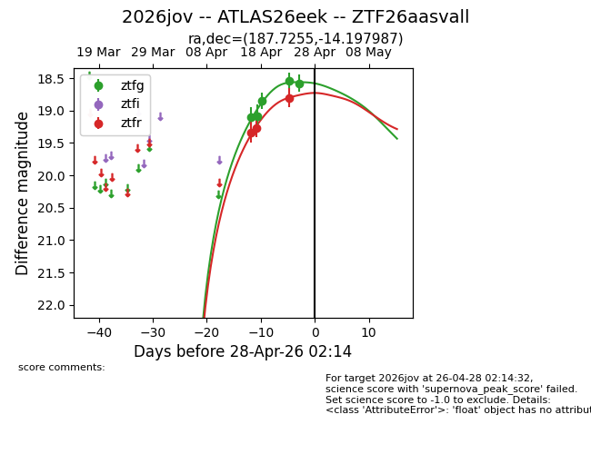
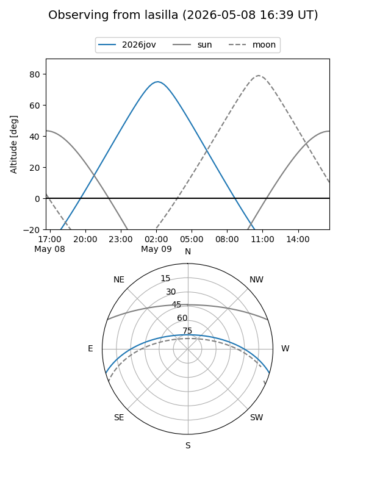
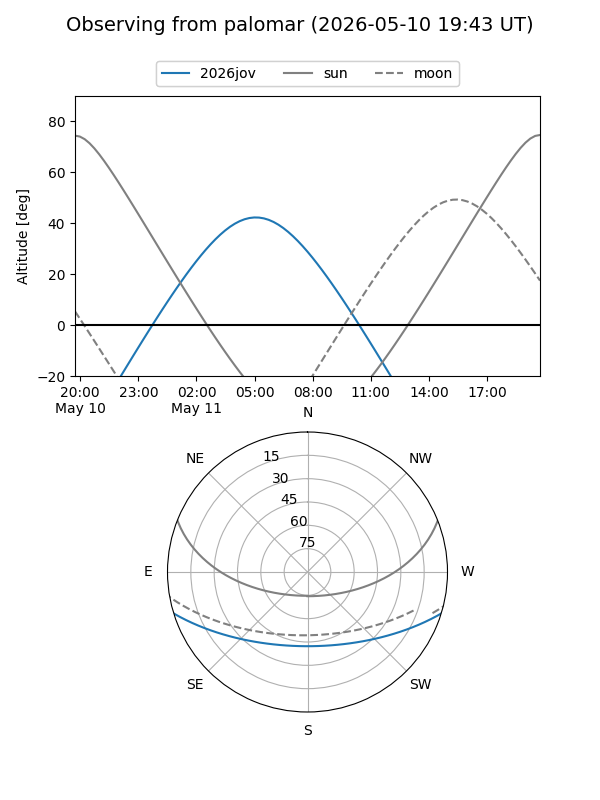
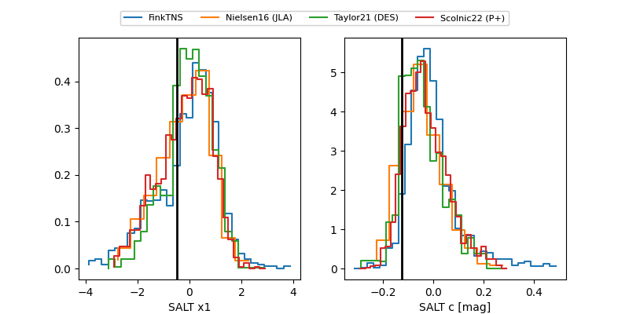

2026jov
Target 2026jov at 2026-04-28 02:15
Aliases and brokers:
FINK: link
Lasair: link
ALeRCE: link
TNS: link
YSE: link
alt names
ZTF26aasvall (ztf,fink_ztf)
2026jov (tns,yse)
ATLAS26eek (atlas)
Coordinates:
equatorial (ra, dec) = 187.7255,-14.19799
equatorial (HMS+DMS) = 12:30:54.13,-14:11:52.75
galactic (l, b) = (295.4278,+48.37432)
Flags:
Photometry:
last ztfg=18.58, ztfr=18.81
5 ztfg, 3 ztfr detections
Lightcurve

Visibility


Additional plots
